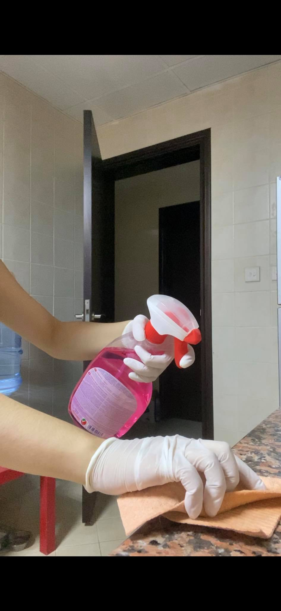
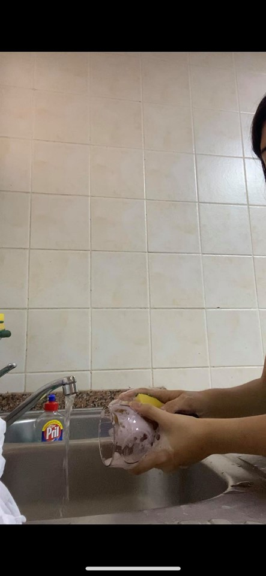
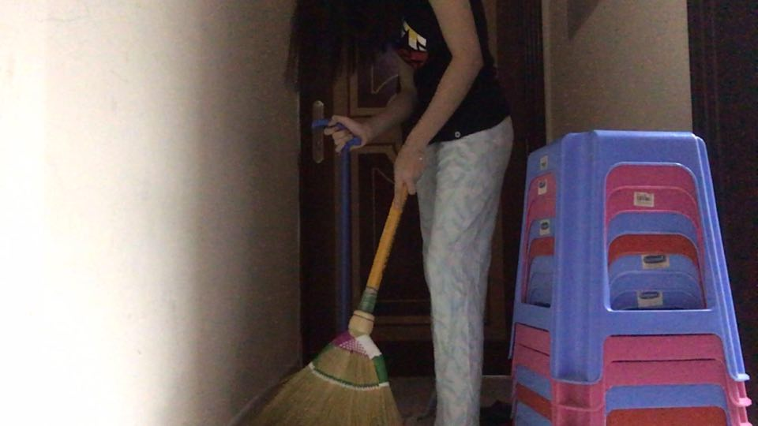
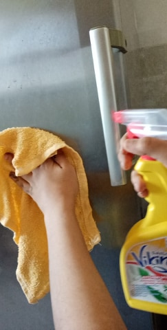
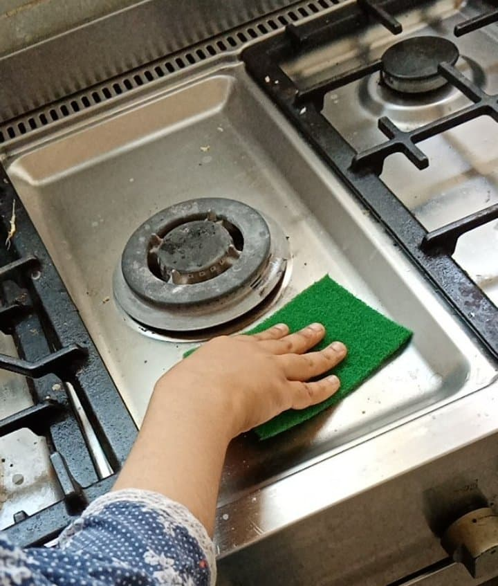

Because of the this virus we can't go outside and see our friends.
Beacuse of the virus we our having an Online Classes or E-learning
Because of the virus we have more time with our family.
Students are required to stay and study at home due to the pandemic has been going around.
More than 300 million students are currently out of school as the COVID-19 outbreak intensifies.
The Ministry of Education started educating students of schools and higher education institutes
through distance learning which also extended through time until June.
Distance learning does, however, come with problems for everyone involving teachers, parents and students,
the latter having to deal also with spending their days without friends.
Teachers have had to transition almost overnight from addressing packed classrooms to explaining theorems and concepts to students on a screen.
On the bright side, the method gives rise to the possibility of expanding high-quality education to countries where it is not the norm or otherwise inaccessible because the infrastructure for physical schools is absent.
If distance-learning is refined to a high standard in the UAE, the country may even prove to become a regional or global hub from which students in less privileged parts of the world can learn remotely.
In the present situation, it is only wise that lessons continue to be taught virtually until the end of the academic year.
We are facing a global health crisis unlike any in the 75-year history of the United Nations — one that is killing people,
spreading human suffering, and upending people’s live
What are things we do in this Quarantine?
Vera is doing her chores


Claire doing in her house

Inaam doing her chores


Claire's opinion about the effect of COVID-19 in education
Vera's opinion about the effect of COVID-19 in education
Inaam's opinion about the effect of COVID-19 in education